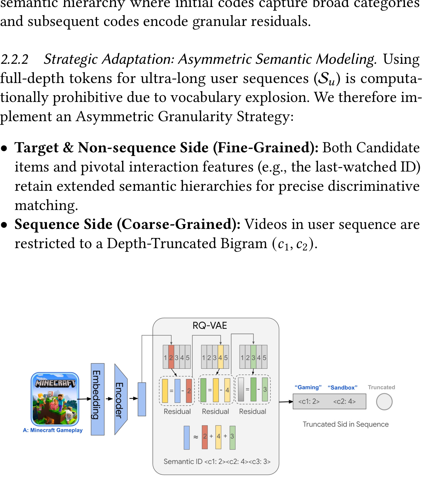
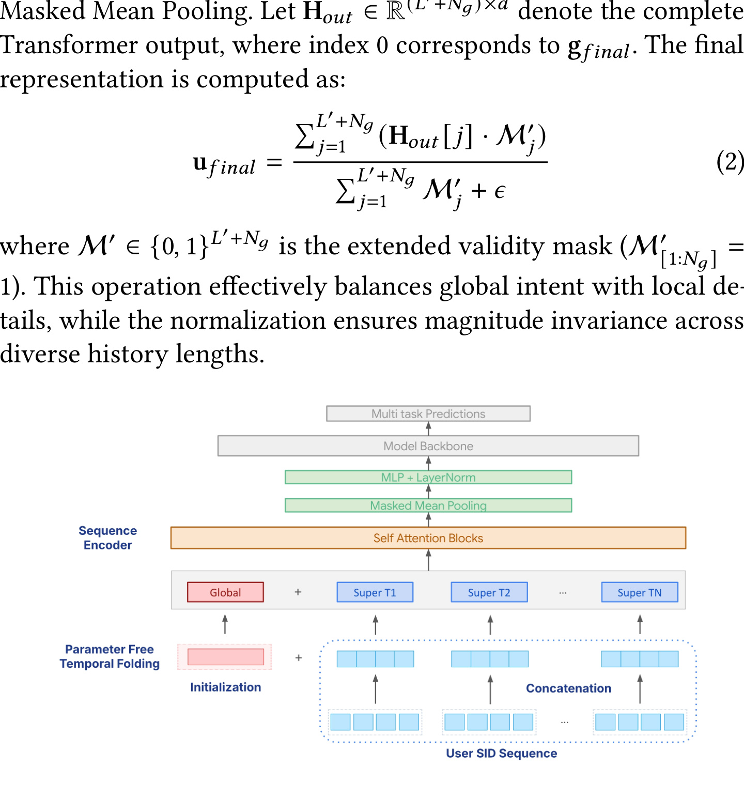
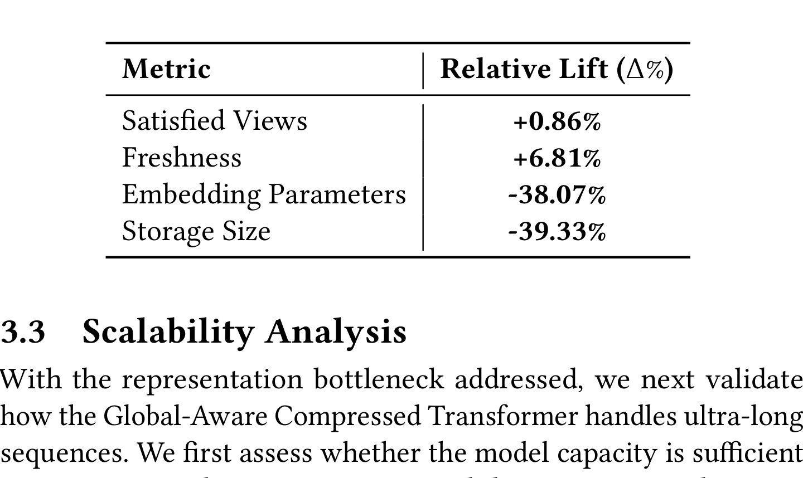
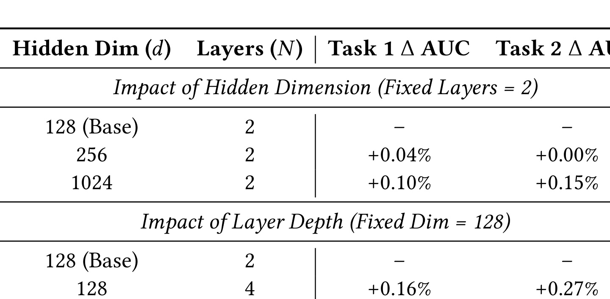
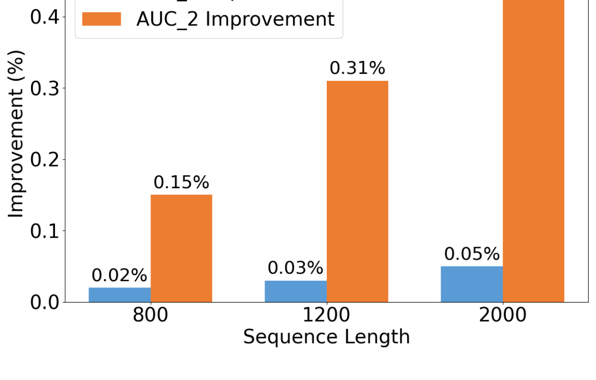
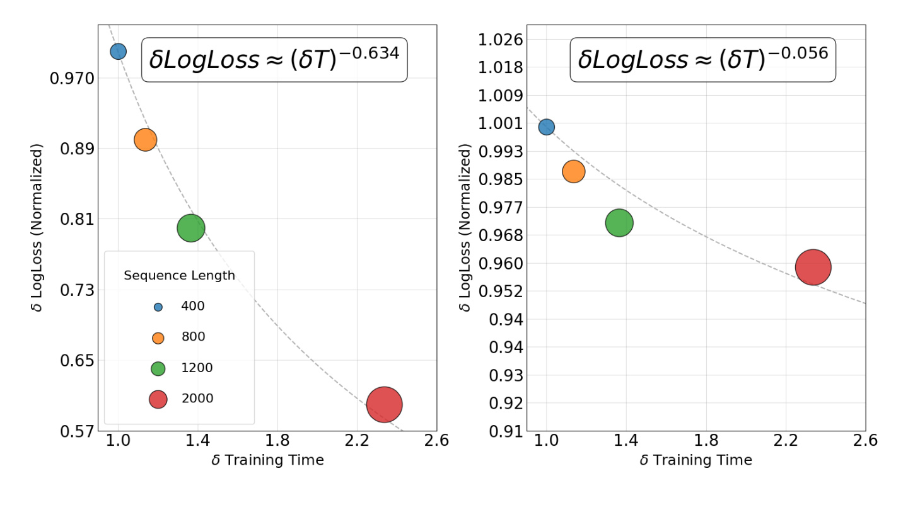
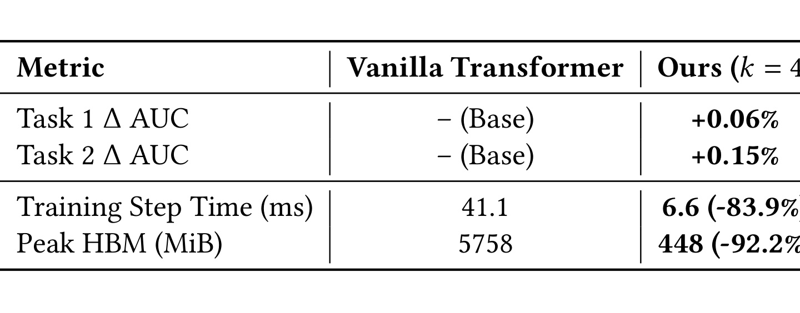
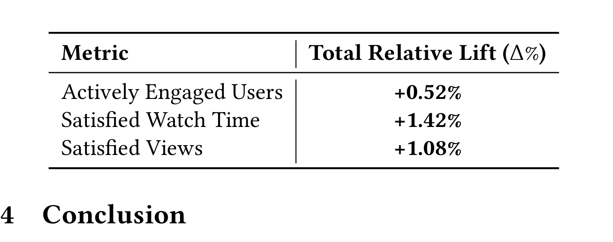

这篇 SIGIR 2026 / arXiv 论文《Beyond Item IDs: Scaling Short-Form-Video Recommendation via Semantic-Native Long Sequence Modeling》来自 Google，一作 Ruixiao Sun，论文入口是 arXiv:2606.07546。它讨论的是短视频推荐里一个很真实的工业问题：用户观看历史已经长到上千条甚至更长，但传统 Video ID 表征稀疏、Transformer 自注意力又有二次复杂度，导致“想看得更远”和“必须低成本服务”之间冲突很强。论文提出的核心组合是 Semantic-Native Representation 加 Global-Aware Compressed Transformer，代码或项目页本轮未核验到公开入口，阅读重点是它怎样把 RQ-VAE Semantic ID、深度截断 bigram、temporal folding 和线上大规模 A/B 证据串成一条可部署的长序列推荐路线。
1. 背景和问题
短视频推荐和普通商品推荐、新闻推荐相比，有一个特别突出的现象：用户行为序列既长又密。一个活跃用户可能在很短时间内刷过大量视频，其中既有稳定兴趣，例如长期喜欢的游戏、宠物、财经或健身内容，也有非常短期的即时意图，例如刚刚连续看了几条某个话题的视频。论文开头把这一点放在核心位置：要捕捉短视频用户兴趣，序列长度 $L>10^3$ 往往是必要的。问题在于，工业推荐系统不能只是离线把更长历史喂给更大的 Transformer。在线服务受延迟、显存、训练吞吐、特征刷新和多目标排序链路约束，任何一个模块的成本放大都可能让上线不可行。
论文认为限制长序列建模扩展的瓶颈有两类。第一类是表示瓶颈。传统 Video ID 是原子 token，不同视频 ID 在 embedding 表中彼此正交，模型必须靠交互日志记住每个视频和用户兴趣之间的关系。短视频平台内容规模巨大，新视频持续涌入，很多视频刚上线时交互很少，纯 ID embedding 对冷启动和低曝光内容非常不友好。更麻烦的是，Video ID embedding 表大小会随 corpus cardinality 扩张，存储和训练开销都很高；当长序列里塞入几百到几千个原子 ID 时，模型看到的是稀疏、离散、缺少语义共享的 token 流。
第二类是结构瓶颈。Transformer 的 self-attention 对序列长度有 $O(L^2)$ 复杂度，长度从 800 扩到 2000 并不是线性增加，而是让 attention 计算和 activation memory 急剧上升。已有工业系统通常会用两阶段方案规避这个问题，例如 DIN/DIEN 这类 target-aware attention 关注较短兴趣，SIM/TWIN 等方法通过过滤、检索、聚类或两阶段网络处理 lifelong behavior。它们的共同代价是：要么提前丢掉一部分历史信号，要么依赖复杂离线预计算和检索策略，要么很难把完整长序列端到端建模。
近两年推荐系统领域出现了两个相关趋势。一个趋势是大厂继续推进更长历史的序列模型，例如 ByteDance 的 LONGER、HyFormer，Meta 的 HSTU、VISTA、DV365 等，目标都是让模型直接吃更多行为而不是只靠手工过滤。另一个趋势是 Semantic ID：从 TDM、Deep Retrieval 到 RQ-VAE 式生成式检索，越来越多工作把 item 从原始 ID 映射到层级离散语义 token。Semantic ID 的吸引力在于，多个内容相似或行为相近的视频可以共享前缀 token，新视频也能通过内容语义进入已有 token 空间，从而缓解冷启动和 embedding 表膨胀。
这篇论文的切入点正是把这两个趋势合在一起：如果只换成 Semantic ID，但序列模型仍然只能看短历史，那么语义表示没有充分释放长程兴趣价值；如果只优化 Transformer，但输入仍是稀疏原子 Video ID，那么长历史里大量 token 仍然缺乏可泛化语义。论文提出的 Semantic-Native Long Sequence Modeling 试图同时解决两个问题：一方面用内容原生的 Semantic ID 替代长序列里的 Video ID，另一方面用 Global-Aware Compressed Transformer 把上千级历史压缩到可训练、可服务的 attention 长度。
这也是论文和很多生成式推荐 Semantic ID 工作不同的地方。它不是把 SID 当作 decoder 要生成的 item token，也不是只比较不同 tokenizer 的离线 Recall，而是把 SID 放进生产短视频排序链路中的长序列用户建模模块。更具体地说，SID 在这里是长历史输入的语义压缩单元：它减少 embedding 参数，给冷启动内容共享语义前缀，并使得序列模型在看很长历史时看到的是粗粒度内容语义，而不是完全分裂的 Video ID。论文最终报告了线上 A/B 的 satisfied watch time、satisfied views 和 actively engaged users 提升，因此它更像一篇工业系统论文，而不是单纯模型结构论文。
从更抽象的推荐建模角度看，这篇论文其实把“长期兴趣”拆成了两个子问题：历史是否足够长，以及历史 token 是否足够可泛化。过去很多长序列推荐工作默认第二个问题已经解决，只要模型能看到更多 item ID，就能学到更多兴趣；但短视频场景中 item 生命周期短、内容供应极快，很多 ID 在训练窗口里没有足够稳定统计。此时继续拉长原子 ID 序列，可能只是把更多稀疏 token 和噪声曝光带进模型，并不必然提升泛化。Semantic ID 的作用是先把历史 token 改造成有共享结构的语义事件，再谈更长上下文。
另一个容易被忽视的背景是“满意”指标和普通点击指标的差别。短视频推荐如果只优化点击或播放开始，很容易偏向标题党、强刺激内容或短期好奇心；论文使用 Satisfied Views、Satisfied Watch Time 和 Actively Engaged Users，说明它关心的是经过平台定义过滤后的高质量消费。虽然论文没有公开 satisfied 的具体计算口径，但这类指标通常比裸点击更接近用户体验。长序列模块在这类指标上有效，意味着它可能更擅长识别稳定兴趣和内容质量，而不只是追逐最近一次点击。
从工程阅读角度看，我认为最重要的问题定义不是“Semantic ID 是否比 Video ID 好”，也不是“Transformer 是否能处理 2000 长度”，而是三者之间的联动：短视频系统要在亿级/十亿级用户规模下，把长历史、内容语义和低成本服务同时满足。任何单点方案都不够。只做 SID 可能无法利用更长历史，只做压缩 attention 可能仍然被 ID 稀疏限制，只做异步长序列可能和实时短期兴趣脱节。论文的贡献在于给出一个组合式答案，并用线上数据说明这个组合至少在 Google 的大规模短视频生产环境中是有价值的。
2. 方法
2.1 系统架构：同步短期兴趣与异步长期兴趣分工
论文的系统首先不是一个单纯的端到端 Transformer，而是部署在混合同步—异步框架中。短视频推荐的实时服务图需要快速响应用户刚发生的点击、播放、停留和滑走等行为，因此它保留一个 Synchronous Short-Term Module，用于编码最近的短期交互尾序列 $S_{short}$。这个模块在 serving graph 里实时运行，目标是捕捉刚刚出现的兴趣转向，例如用户突然开始连续看某个事件、明星或游戏内容。如果长序列模块完全替代短期模块，异步刷新延迟会让系统错过这些短期信号。
与之对应的是 Asynchronous Long-Term Module。它建模超长用户序列 $S_{long}=\{v_1,\ldots,v_L\}$，也就是跨更长时间窗口积累下来的观看历史。这个模块适合离线或近线异步计算，因为长历史的特征抽取、SID 映射和 Transformer 编码成本更高，不适合每个请求都从零计算。论文强调二者共享核心排序系统中的 backbone 和 optimization objective，使异步长期表示被映射到与实时排序特征一致的 latent space。这个设计很关键：如果长期兴趣表示来自一个完全独立目标，线上融合时可能出现特征空间错位，导致长历史信号虽然看起来强，但和当前候选排序目标不一致。
训练和推理阶段的差异可以这样理解。训练时，短期模块和长期模块都围绕核心 ranking objective 学习，长期模块通过异步序列表示吸收更大时间跨度的行为；推理时，短期模块实时更新，长期模块提前生成用户表示或中间特征，再进入在线排序链路。这个分工也解释了为什么论文不追求“所有历史都实时 attention 一遍”。真正的生产系统需要把低延迟、特征新鲜度和长程记忆拆开：实时模块负责新鲜度，异步模块负责长程兴趣，二者在共享目标下对齐。
这种架构和 Kuaishou TWIN/TWIN-V2、Meta HSTU/VISTA、YouTube 长历史建模等工业路线有共通点：它们都承认长期兴趣是必要的，但不会简单把全部历史塞进在线主模型。区别在于，这篇论文把长期模块的输入从 Video ID 改成 SID，并在结构上用 temporal folding 缩短 attention token 数。也就是说，它不仅把 long-term module 异步化，还把 long-term module 内部的表示和计算成本做了双重压缩。
2.2 语义原生表示：RQ-VAE SID 与深度截断 bigram
Semantic-Native Representation 是论文的第一根支柱。论文假设上游已经有基于 RQ-VAE 的 SID infrastructure：它把高维多模态内容 embedding 投影到离散层级 latent space。对每个视频 $v$，RQ-VAE 输出一个离散 code tuple：
符号解释：$s_v$ 表示视频 $v$ 的层级 Semantic ID，$c_1$ 是第一层粗粒度 code，$c_2$ 到 $c_D$ 是逐层细化的 residual code，$D$ 是 RQ-VAE codebook 深度。这里 $c_1$ 通常表示最粗粒度语义，例如大类或 broad vertical；后续 $c_2,\ldots,c_D$ 表示逐层 residual，捕捉更细的内容差异。这个 coarse-to-fine 结构非常适合短视频内容：同属“游戏”的视频可以共享第一层，但“沙盒游戏”“射击游戏”“攻略”“直播切片”又可以在后续层分开。传统 Video ID 没有这种共享路径，两个内容相近的视频也需要模型分别记忆。
不过，论文没有把完整深度 SID 直接用于超长用户序列。原因是 full-depth token 会带来 vocabulary explosion：如果序列侧每个行为都保留多层细粒度 SID，那么长历史里 token 种类仍然很大，embedding 表和稀疏性问题会重新出现。论文因此提出 Asymmetric Granularity Strategy：候选 item 和非序列侧关键交互特征保留更细粒度语义层级，用于精确区分当前目标；但用户序列侧的视频只保留 Depth-Truncated Bigram，也就是只用 $(c_1,c_2)$。
具体地，论文把垂直类目 $c_1$ 和子垂直类目 $c_2$ flatten 到统一整数空间：
符号解释：$ID_{seq}$ 是序列侧最终使用的整数 token，$c_1$ 与 $c_2$ 分别是前两层语义 code，$|V|$ 是单层 codebook vocabulary size，用来把二元组映射到不冲突的整数空间。这个公式的含义是：长序列里每个视频不再用原始 Video ID，也不使用完整 SID 路径，而是用前两层语义 code 组成一个 coarse-grained sequence token。这样 embedding 表大小由 codebook 前两层组合控制，而不是随视频总量无界增长。它牺牲了一部分细粒度视频身份，但保留了足够表达用户长期兴趣的 category/sub-category 级语义。

Figure 1 展示了这个流程：原始视频先经过 RQ-VAE 量化得到层级 SID，然后通过 Bi-gram Truncation 把路径压平为 sequence modeling 使用的统一整数 ID。这张图的重点不是 RQ-VAE 本身，而是“截断”这个工程选择。长序列模块的任务并不是判断用户是否会点击某一个具体视频，而是为 ranking system 提供长期兴趣表示；在这个层面，粗粒度语义往往比视频唯一标识更稳。比如用户长期看“Gaming-Sandbox”相关内容，即使具体视频不断更新，粗粒度兴趣仍然有效。
这里的 asymmetry 很值得借鉴。候选物品和 last-watched ID 等关键特征需要细粒度表达，因为它们直接决定当前排序；长历史里的每个行为如果都保留细粒度，就会放大成本和噪声。论文没有追求一种 token 粒度适配所有位置，而是按特征角色分配粒度：target side 更细，sequence side 更粗。这一点和一些生成式推荐 tokenizer 论文不同，后者常常希望每个 item 的 SID 尽可能唯一；而这篇论文更关心 SID 作为长序列语义压缩符号是否足够稳定。
还有一个实现层面的细节是，sequence side 的 bigram SID 和 target side 的 fine-grained SID 之间需要在同一推荐目标下协同训练。长历史模块输出的是用户长期表征，最终仍要服务候选级排序；如果 target 侧完全不用细粒度语义，模型可能难以把粗粒度长期兴趣映射到具体视频；如果 sequence 侧也使用完整细粒度路径，成本又会失控。论文选择 asymmetric granularity，本质上是在输入端构造一种多分辨率语义系统：长期记忆是低分辨率但覆盖广，当前目标是高分辨率但数量少，二者在 ranking backbone 中对齐。
这种多分辨率设计在工业推荐里很常见，但本文把它写得比较清楚。用户画像可能是粗粒度的，实时行为是细粒度的；召回候选可能用粗粒度 embedding，精排特征需要细粒度交叉；离线长期兴趣可以慢更新，实时短期兴趣必须快更新。Semantic ID 只是其中一种表示工具，真正重要的是把不同分辨率的信号放到合适的位置。若复现时把所有位置都替换成同一层 SID，反而可能丢掉论文最关键的工程折中。
这种设计也自然改善冷启动。新视频即便没有大量交互，只要内容 embedding 能被 RQ-VAE 映射到已有 coarse semantic prefix，它在长序列建模中就能与相似视频共享 sequence-side embedding。对内容生命周期很短的短视频平台来说，这比等待 Video ID embedding 通过交互学出来更现实。当然，风险也在这里：如果 RQ-VAE 语义前缀过粗，兴趣会被过度平滑；如果前两层 code 与实际推荐意图不一致，模型可能把视觉相似但消费意图不同的视频混在一起。因此 SID 基础设施质量、codebook 更新频率和语义簇监控是工程落地的关键。
2.3 非对称粒度背后的表达力—成本取舍
论文把 SID 设计称为 Strategic Adaptation，而不是简单 token 替换，因为它实际解决了三个问题。第一是 embedding storage。原子 Video ID 的 embedding table 大小近似随视频库规模增长，热门内容、长尾内容和新内容都占据独立行；Depth-Truncated Bigram 则把序列侧 embedding table 绑定到前两层 codebook 组合，存储规模明显更可控。Table 1 也验证了这一点：在 $L=160$ 的线上消融中，替换为 SID 后 Embedding Parameters 降低 38.07%，Storage Size 降低 39.33%。
第二是 generalization。传统 ID embedding 对未见或低频视频几乎没有共享能力，模型需要从稀疏交互中学习每个 ID 的含义。SID 前缀让内容相似的视频共享表示，尤其能提升 freshness，也就是最近上传内容的满意观看。Table 1 报告 Freshness +6.81%，远高于 Satisfied Views +0.86%，说明 SID 的主要收益确实集中在冷启动/新鲜内容泛化，而不是只靠替换 embedding 表带来整体指标小幅波动。
第三是 sequence semantics。长历史用户行为如果用 Video ID 表示，模型需要从数千个离散 ID 中归纳长期偏好；如果用 SID bigram 表示，序列本身就带有语义聚类结构。一个用户反复观看不同创作者、不同视频但同属相近语义前缀的内容时，长序列模型更容易识别稳定兴趣。换句话说，SID 在这里不仅是压缩存储，也是把“内容关系”显式注入用户历史。
但是，论文的方法并不是无损替换。序列侧只保留 $(c_1,c_2)$ 会丢掉细粒度视频差异，例如同一子类下不同创作者、风格、质量、语言、地域和时效内容。论文的答案是把细粒度信息留给 target side 和 non-sequence side。候选物品仍可使用 extended semantic hierarchy；last-watched ID 这类对即时意图重要的特征也可以更细。长序列模块用粗粒度历史建模长期兴趣，短期/目标侧用细粒度特征决定当前候选是否匹配。这个分工降低了单一表示粒度的压力。
从复现角度看，最需要谨慎的是 SID 的生成来源。论文只概述使用上游 RQ-VAE 处理 high-dimensional multi-modal content embeddings，没有披露完整训练细节、codebook 大小、更新节奏、碰撞率和内容 embedding 模型。如果工程团队要借鉴，不能只照搬 $ID_{seq}=c_1\cdot |V|+c_2$，而要先验证：前两层 code 是否真的对应业务可用的兴趣粒度；同一 bigram 下的视频在类目、主题、质量、观看时长和用户转化上是否足够一致；新视频进入 SID 空间后是否会被错误聚到热门但不相关的簇。
2.4 Global-Aware Compressed Transformer：把长序列折成 super-token
第二根支柱是 Global-Aware Compressed Transformer。标准 self-attention 对长度 $L$ 的序列有 $O(L^2)$ 复杂度，$L\sim 10^3$ 时已经很昂贵，更不用说生产系统中要训练、刷新和服务亿级用户表示。论文提出的 temporal folding 是一个非常工程化的操作：它不引入参数，不做 pooling，也不直接丢弃 token，而是把相邻 $k$ 个 token 沿 channel 维拼接成一个 super-token。
给定输入矩阵 $X\in \mathbb{R}^{L\times d}$，窗口大小为 $k$，第 $i$ 个 super-token 定义为：
经过这个操作，序列形状从 $(L,d)$ 变成：
符号解释：$L$ 是原始序列长度，$d$ 是 token embedding 维度，$k$ 是 folding 窗口大小，压缩后 token 数变为 $L/k$，每个 super-token 的特征维度变为 $k\cdot d$。
符号解释：$H^{super}_i$ 是第 $i$ 个折叠后的 super-token，$x_t$ 是原始序列中第 $t$ 个 token embedding，$k$ 是窗口大小，$\operatorname{Concat}$ 表示沿 channel 维拼接。直观上，temporal folding 把时间分辨率换成特征维度。原来 attention 要在 $L$ 个 token 之间建模，现在只在 $L/k$ 个 super-token 之间建模；每个 super-token 内部保留 $k$ 个相邻行为的拼接信息，因此不是平均池化那种直接损失局部细节。若只看 attention 主项，压缩后复杂度近似从 $O(L^2d)$ 变为 $O((L/k)^2\cdot kd)=O(L^2d/k)$，即理论上 attention 计算可按 $k$ 级别降低；activation memory 也因 token 数减少而显著下降。

Figure 2 给出了整体结构。用户 SID 序列先经过 temporal folding 形成 compressed sequence，随后与 learnable global query token 一起送入 Transformer。这里要注意，论文强调 temporal folding 是 non-parametric 和 non-destructive reshaping，而不是 learned pooling。它没有在进入 Transformer 前做加权平均，也没有用一个小网络压缩窗口，原因可能是工业系统更需要稳定、可解释、低成本的结构变化。参数越少，训练和服务时越容易控制，也减少了压缩模块本身过拟合或漂移的风险。
Temporal folding 还有一个和推荐序列特别相关的假设：相邻若干行为之间存在局部连续性。短视频用户常常在一个 session 内围绕相近主题连续消费，或者在推荐系统反馈下形成短暂兴趣簇。因此把相邻 $k$ 个 SID 拼成 super-token，可能让模型更容易看到局部主题片段，而不是把每个视频都当成同等独立事件。这个假设在文本语言模型里未必成立，因为 token 顺序和语法位置非常精细；但在推荐行为序列里，相邻事件的语义粒度更粗，folding 的损失可能更可控。
不过，folding 的窗口边界也可能引入问题。如果一个用户在一次 session 中快速跨越多个兴趣，或者序列按时间拼接时包含不同天、不同场景、不同入口的行为，相邻 $k$ 个事件未必属于同一局部主题。论文没有说明是否按 session 边界、时间间隔或 padding 对 folding 做额外处理。如果工程实现直接按固定长度切窗，需要特别检查 super-token 是否跨越 session boundary；否则模型可能在 channel 维里混合无关行为，导致局部表示噪声增加。这个风险也解释了为什么 $k=6$ 会开始伤害 AUC：窗口越大，跨主题混合概率越高。
当然，所谓 non-destructive 也需要正确理解。它没有删除原始 token 数值，但它改变了 attention 的组织方式：窗口内 $k$ 个相邻行为不再作为独立 token 互相 attention，而是被拼接到同一个 super-token 的 channel 维。窗口内部依赖要通过后续 projection/FFN 在特征维表达，窗口之间依赖由 attention 处理。这会牺牲一部分细粒度时间顺序建模能力，但换来大幅成本下降。论文 Table 3 显示 $k=4$ 是较优折中，而 $k=6$ 会导致 Task 1 AUC 回退，说明压缩过强确实会伤害时间分辨率。
2.5 Global Query、Unified Masked Mean Pooling 与最终用户表示
Temporal folding 解决的是 token 数问题，但长序列表示还需要一个能汇聚全局兴趣的机制。论文在 compressed sequence 前加入 learnable Global Query Token：
符号解释：$G_{init}$ 是可学习的全局查询 token 矩阵，$N_g$ 是 global query 数量，$d$ 是隐藏维度。它和一些用户画像初始化方法不同：论文把 $g_{init}$ 设计成 feature-agnostic anchor，而不是由用户 profile 初始化。这样做的目的，是强迫 attention 机制从动态交互序列中抽取全局表示，而不是让全局 token 预先携带静态画像偏置。论文还把它类比为 attention sink：全局 token 可以吸收低熵或公共信号，稳定优化，并在多层 Transformer 后形成 $g_{final}$。
Transformer 输出记为：
符号解释：$H_{out}$ 是 Transformer 的完整输出序列，$L'$ 是 folding 后的压缩序列长度，$N_g$ 是 global query token 数量，$d$ 是输出隐藏维度。其中 $L'=L/k$，前 $N_g$ 个位置对应 global query，后续位置对应 compressed sequence。最终用户表示不是只取 global token，也不是只平均所有 sequence token，而是通过 Unified Masked Mean Pooling 融合全局状态和局部顺序信号：
符号解释：$u_{final}$ 是最终长期用户表示，$H_{out}[j]$ 是第 $j$ 个输出 token，$M'_j$ 表示该位置是否有效，$\epsilon$ 是防止分母为零的数值稳定项。这里 $M'\in\{0,1\}^{L'+N_g}$ 是扩展 validity mask，并且 $M'[1:N_g]=1$，保证 global query 输出总是参与 pooling。分母中的 $\epsilon$ 用于数值稳定。这个公式有两个细节值得注意。第一，mask pooling 让不同用户历史长度下的表示幅度更稳定，避免长历史用户因为 token 多而表示范数偏大。第二，全局 token 和 compressed sequence token 一起进入平均，意味着模型既保留由 global query 汇聚出的整体兴趣，也保留局部 super-token 输出中的细节。
还可以从训练动态理解 Global Query。普通 mean pooling 对所有 token 一视同仁，长历史中大量低价值、重复或噪声行为会被平均进去；只用最后一个 token 又不适合推荐历史，因为最后观看不一定代表长期兴趣。Global Query 在 attention 中作为一个可学习读取器，可以主动从压缩后的 sequence 中抽取对主目标有用的全局成分。与此同时，Unified Masked Mean Pooling 又不把最终表示完全交给 global token，而是让全局读取和局部 token 输出共同参与。这种折中比“取 CLS”更稳，也比纯平均更有目标感。
论文把 global query 设为 feature-agnostic anchor，而不是用用户画像初始化，也有防止 shortcut 的意味。如果 global token 从静态画像出发，模型可能过度依赖年龄、地域、语言、设备或长期类目标签，而忽略动态观看序列；feature-agnostic 初始化迫使它在 attention 过程中从行为中读取信息。当然，这并不表示画像没用。画像和其他实时特征仍可在主排序网络中使用，只是长期序列模块内部的全局 token 不直接绑定画像，从而保持模块职责清晰。
从方法直觉看，Global Query 处理“用户整体长期兴趣是什么”，Temporal Folding 处理“如何以较低成本保留大量局部行为”，Unified Masked Mean Pooling 处理“如何把二者变成一个稳定的用户向量”。三者缺一不可。若只有 folding 没有 global query，模型可能更像压缩后的普通 sequence encoder，缺少显式全局汇聚；若只取 global query，可能丢掉部分局部细节；若没有 mask normalization，不同历史长度和 padding 情况下的表示幅度会不一致。
训练和推理阶段，这个模块的形态基本一致。训练时，它作为长期兴趣模块的一部分参与主 ranking objective；推理时，它可以异步为用户生成长期表示，再供线上排序消费。由于 temporal folding 无参数、global query 参数量小、SID embedding 表更小，整个长期模块的训练 step time 和 HBM 都显著降低。论文后续效率表证明，$k=4$ 时训练 step time 从 41.1 ms 降到 6.6 ms，Peak HBM 从 5758 MiB 降到 448 MiB，这对生产系统很关键。
2.6 与传统长序列推荐方案的差异
把论文方法放到已有工业长序列方案中看，它的差异主要体现在三个层面。第一，它不是检索式过滤。SIM、TWIN 等方案通过检索、聚类或 target-aware filtering 找到与候选相关的一部分历史，优点是在线可控，缺点是会提前丢弃信息，而且检索策略和主模型之间可能割裂。本文的 long-term module 更接近 full sequence modeling，只是用 SID 和 folding 控制成本，而不是先用启发式把历史截短。
第二，它不是简单降采样。很多长序列系统会按时间间隔抽样、按行为强度筛选、按最近性截断或做 pooling。Temporal folding 虽然降低 token 数，但它把相邻 token 拼接到 channel 维，保留了窗口内原始 token 的可学习组合空间。相比平均池化，它更可能保留局部 transition pattern；相比 learned pooling，它更低成本、更稳定，也更容易在工程上部署。
第三，它把表示压缩和结构压缩联合起来。仅有 folding 时，输入仍是 Video ID，冷启动和 embedding 表问题还在；仅有 SID 时，序列长度二次复杂度还在。论文真正的收益来自组合：SID 降低稀疏性和存储，folding 降低 attention token 数，global query 保留全局兴趣，异步架构降低在线服务压力。Table 4 的全系统收益不能简单归因于某一个模块，而应理解为整个系统升级的结果。
与 Meta 的 HSTU/VISTA 或 ByteDance 的 LONGER 相比，本文没有把重点放在全新 attention kernel 或超大参数结构，而是强调输入 token 和结构重排。这个选择可能更容易被现有推荐系统吸收：SID 可以作为特征工程和 embedding 表替换逐步上线，folding 可以作为序列 encoder 内部的 reshape 改造，异步长期模块也能先做旁路实验。相比一次性替换主排序架构，这种组合的上线风险更低，也更符合大规模推荐系统渐进迭代的实际节奏。
论文没有展开 negative results，但从表格可以反推出一些边界。SID 对 freshness 的收益最大，说明它特别适合内容更新快、原子 ID 稀疏严重的场景；如果业务中 item 生命周期长、ID embedding 已经非常充分，SID 替换的边际收益可能更小。Temporal folding 在 $k=4$ 最优，说明压缩必须尊重行为序列的局部结构；如果序列短或行为间隔稀疏，folding 可能不如检索式过滤。全系统 A/B 相对 baseline 变化多，说明方法适合作为系统升级方案，但不宜被理解成一个可独立插拔的单一 trick。
我认为这也是论文标题“Beyond Item IDs”的含义。它不是说 item ID 在推荐系统中完全没用，而是说当用户历史达到千级长度、内容更新极快、线上成本严格受限时，原子 Video ID 不再是最合适的长序列输入单位。Semantic-native token 让模型从一开始就在语义空间里建模长期兴趣，再通过高效 Transformer 扩展上下文长度。对短视频平台来说，这比“把更多原始 ID 塞进更大的模型”更可持续。
3. 实验结果
3.1 实验设置与证据结构
论文实验全部围绕生产短视频流量展开，而不是公开小数据集。作者说系统服务 billions of active users，并在生产流量上评估 SID、序列长度、模型容量、效率和端到端线上收益。它没有公开具体数据集、模型完整超参和业务平台名称，因此复现性有限；但从工业论文角度看，它给出的证据链比较完整：先看 SID 替换 Video ID 的线上消融，再看 Transformer 容量和长度扩展的离线指标，再看 temporal folding 的效率—精度 trade-off，最后看全系统 A/B 对用户满意参与和消费指标的影响。
指标也分成几类。SID 消融用 Satisfied Views 和 Freshness，以及 embedding parameters/storage size；容量和长度实验用 Task 1 / Task 2 的 AUC 或 LogLoss；效率实验报告 training step time 和 peak HBM；全系统 A/B 报告 Actively Engaged Users、Satisfied Watch Time 和 Satisfied Views。这个组合说明论文关注的不是单一 offline AUC，而是“模型能不能更准、能不能更长、能不能更省、能不能上线”。
从统计显著性看，Table 1 和 Table 4 都声明 $p<0.05$，但没有给出置信区间、实验周期、流量比例和多重检验修正。工业论文常常受保密限制无法披露完整细节，但读者在引用时仍应保守：这些结果证明方向和量级可信，不等于可以直接外推到所有短视频系统。尤其是 satisfied 指标往往由平台内部定义，不同平台的满意观看、有效观看、完播、互动和长期留存权重不同，线上收益的业务含义也会不同。
这篇论文的实验还有一个优点：它把成本指标和业务指标放在同一叙事里。很多推荐论文只看 AUC/Recall，忽略训练成本和上线资源；也有一些系统论文只看吞吐，不说明业务效果。本文 Table 3 的成本下降和 Table 4 的业务提升相互支撑：没有成本下降，就无法承受 $L=2000$ 和更大容量；没有业务提升，成本下降也只是工程优化。对工程团队来说，这种“成本释放是否转成效果提升”的闭环比单个 benchmark 更重要。
3.2 Semantic ID 线上消融：冷启动和存储同时受益

Table 1 比较的是在序列长度 $L=160$ 下，把 Video ID 换成 Bi-gram SID 后相对基线的线上变化。Satisfied Views 提升 +0.86%，Freshness 提升 +6.81%，Embedding Parameters 降低 -38.07%，Storage Size 降低 -39.33%，并且论文标注所有核心线上指标 $p<0.05$。这张表是全文最直接证明 SID 价值的证据：它说明 SID 不只是压缩 embedding 表，还能提升用户满意观看，尤其对最近上传内容的满意观看有显著收益。
我会把 Table 1 解读成两层。第一层是泛化收益。Freshness +6.81% 远高于整体 Satisfied Views +0.86%，说明内容原生 SID 对冷启动/新鲜内容更有帮助。传统 Video ID 对新视频没有足够交互，embedding 难以学稳；SID 通过共享语义前缀让新视频借用相似内容的历史信号。第二层是成本收益。参数和存储下降接近 40%，这对长序列模块很重要，因为用户历史越长，embedding lookup、训练数据读取、模型存储和更新成本越敏感。
不过，这个消融只在 $L=160$ 下报告，没有直接说明在 $L=800$ 或 $L=2000$ 下单独替换 SID 的收益是否一样。全系统最终收益来自 SID、compression、容量扩展和长度扩展的共同作用。引用这张表时应避免说“SID 单独带来最终 +1.42% watch time”，更准确的说法是：SID 单独替换 Video ID 已经能在较短序列上带来满意观看和 freshness 提升，同时释放存储与参数预算，为后续扩展长序列创造条件。
3.3 扩容和拉长序列：模型容量、历史长度与 scaling law
在解决表示瓶颈后，论文继续验证 Global-Aware Compressed Transformer 是否能有效利用更大的模型容量和更长历史。Table 2 分别比较 hidden dimension 和 layer depth。在固定 2 层时，hidden dimension 从 128 扩到 256，Task 1 ΔAUC +0.04%，Task 2 +0.00%；扩到 1024 时，Task 1 +0.10%，Task 2 +0.15%。在固定 hidden dim 128 时，层数从 2 到 4，Task 1 +0.16%，Task 2 +0.27%；到 6 层时，Task 1 +0.23%，Task 2 +0.36%。

这组结果说明，SID 长序列模型不是一个容量饱和的小模块。它能从更宽或更深的网络中继续获益，尤其是层数增加带来的提升更明显。对推荐系统来说，这个结论重要，因为很多序列模块在工业约束下会被压得很小，长历史信号即使存在也可能被模型容量限制。论文通过 SID 和 compression 降低成本后，可以把释放出的计算预算重新投入更深的异步长期模块，形成“压缩节省成本—扩容吸收信号”的闭环。
Figure 3 进一步展示序列长度从 400、800、1200 到 2000 时，不同任务 AUC 随长度单调提升。这个现象支持论文的核心假设：超长历史里确实有短窗口看不到的有效信号。尤其从 $L=1200$ 到 $L=2000$ 仍有增益，说明用户长期观看历史不是简单在几百条后饱和。对短视频系统来说，这很合理：用户稳定兴趣可能跨天、跨周甚至更长周期出现，短期连续行为只能捕捉即时意图，无法覆盖长期偏好分布。

Figure 4 则给出 normalized scaling law。论文把不同长度下相对 LogLoss 和 training time 的关系写成幂律形式，文中表达为相对损失随相对训练时间满足近似 power-law，Task 1 和 Task 2 的 exponent 分别为 -0.634 和 -0.056。图中虚线表示幂律拟合，横轴可以理解为相对训练成本或训练时间变化，纵轴是相对 LogLoss；曲线越陡，说明该任务越能把额外训练预算转化成损失下降。这里要注意，Figure 4 是经验拟合而不是理论定理，作者没有声称 exponent 在所有数据、所有任务和所有模型规模上稳定。它更像一个工程诊断工具：如果某个任务的曲线已经变平，继续拉长序列或增加训练时间的收益就可能低于成本；如果曲线仍然陡峭，就说明长历史还有可挖信号。可以把它理解成：当训练时间随序列长度增加而增加时，损失下降呈现可拟合趋势，但不同任务的收益斜率差异很大。Task 1 的 exponent 更负，说明它更能从长序列和训练时间中获益；Task 2 更平缓，可能代表该任务对长历史不那么敏感，或者已有特征已覆盖主要信号。

这部分实验最值得关注的是“长序列收益不是均匀的”。Figure 3 和 Figure 4 放在一起看，能区分两个问题：长度增加是否带来 AUC 增益，以及这种增益相对于训练成本是否划算。Figure 3 回答第一个问题，显示 $L=400 ightarrow 800 ightarrow 1200 ightarrow 2000$ 的方向上 AUC 持续改善；Figure 4 回答第二个问题，用 normalized LogLoss 和 training time 的关系估计边际收益。对生产系统来说，第二个问题往往更关键，因为长序列不是免费午餐，只有当额外成本能稳定换来满意消费提升时，系统才值得扩展。不同任务、不同指标、不同用户群可能对 $L$ 的敏感性差异很大。工程上不应简单把所有任务都扩到 2000，而应按任务收益、成本和延迟预算分配长度。论文没有给出用户分桶、内容分桶和任务定义细节，因此我们只能看到总体趋势，无法判断哪些用户或内容最受益。后续若要复现，建议补充按用户活跃度、内容新鲜度、兴趣多样性和 session 间隔的分桶分析。
3.4 效率画像：k=4 的 temporal folding 是精度—成本折中点
Table 3 是方法能否上线的关键证据。它在 $L=800$、64 chips 的计算基础设施上 profile 序列建模组件。相比 vanilla Transformer，Global-Aware Compression 在 $k=4$ 时 Task 1 ΔAUC +0.06%，Task 2 ΔAUC +0.15%，训练 step time 从 41.1 ms 降到 6.6 ms，下降 83.9%；Peak HBM 从 5758 MiB 降到 448 MiB，下降 92.2%。

这张表的意义非常大。很多高效 Transformer 论文只展示 FLOPs 或理论复杂度，但工业系统真正关心的是训练 step time、显存峰值和指标是否掉点。这里 $k=4$ 不仅大幅降成本，还小幅提高 AUC。论文解释为 temporal folding 可能带来 local denoising 和 expanded feature expressivity：相邻 $k$ 个 token 拼接后，attention 在 super-token 之间建模，局部窗口内的信息被放进更高维特征，可能减少低价值噪声，并让模型捕捉局部相关性。
不过，论文也指出继续增加压缩到 $k=6$ 会出现 AUC 回退，Task 1 ΔAUC 为 -0.04%。这说明 temporal folding 不是越大越好。$k$ 太小，成本节省不足；$k$ 太大，时间分辨率下降太多，模型难以区分细粒度顺序。$k=4$ 在本文系统中是 Pareto 点，但不一定适用于所有平台。短视频观看序列通常行为密集，4 个相邻视频可能仍然属于相近 session 片段；如果是电商、音乐、新闻或搜索行为，窗口大小和时间间隔分布不同，最优 $k$ 需要重新调。
效率表还提示一个工程策略：压缩不是为了让模型变小，而是为了把省下的预算用于更长序列和更大容量。论文最终全系统从 baseline 的 $L=800$ Video ID 升级到 $L=2000$ SID，并且能扩大异步 modeling component 的 capacity。如果没有 Table 3 的成本下降，$L=2000$ 和更大容量可能根本无法承受。因此 temporal folding 的价值不只是本模块快了，而是解锁了系统级扩展。
3.5 全系统线上收益：从 L=800 Video ID 到 L=2000 SID
最后，Table 4 给出完整系统升级的线上 A/B 结果：baseline 是 $L=800$ Video ID，优化系统是 $L=2000$ SID 加 Global-Aware Compression 和扩容后的异步长序列模型。所有报告的 cumulative gains 都标注 $p<0.05$。Actively Engaged Users 提升 +0.52%，Satisfied Watch Time 提升 +1.42%，Satisfied Views 提升 +1.08%。

这组结果是论文最强的工业证据。Satisfied Watch Time +1.42% 在大规模短视频平台上通常是非常可观的提升；Satisfied Views +1.08% 说明不是只拉长单次观看时长，也增加了满意消费次数；Actively Engaged Users +0.52% 则说明用户级参与也有正向变化。更重要的是，这些收益来自全系统升级，而不是离线单点指标。它说明 SID 表示、长序列长度、compressed Transformer 和异步容量扩展组合后，确实能转化为线上用户体验指标。
但这张表也需要谨慎解读。它不是严格的模块消融，不能单独归因于 SID、$L=2000$、folding 或模型容量。baseline 和实验组同时改变了表示、长度、结构和容量，因此只能说明整体方案有效。论文没有提供分阶段线上 A/B，比如“只加 SID”“只从 800 到 2000”“只加 folding”“只扩容”的逐步累积收益；也没有报告延迟、资源成本、特征刷新周期、不同国家/区域/内容类目的异质性。这些信息对其他团队迁移方法很重要。
另外，论文是 5 页左右的 SIGIR 论文格式，很多实现细节被压缩。例如 RQ-VAE 训练语料、多模态 embedding 生成方式、codebook 大小、SID 更新频率、global query 数量 $N_g$、Transformer 层数、窗口 $k$ 的完整扫描、线上实验持续时间和流量比例都没有展开。它更适合作为工业技术方向的强信号，而不是可直接复现的开源 recipe。
如果把这些实验连起来，可以看到一个递进逻辑。Table 1 先说明 SID 本身值得替换，因为它不只是省存储，也能提升 freshness；Table 2 和 Figure 3 说明长序列模型确实能吃下更多容量和更长历史；Figure 4 试图把这种扩展收益拟合成 scaling law；Table 3 再说明如果不做 compression，成本会阻塞扩展；Table 4 最后证明组合升级在线上有效。这个证据顺序比较清晰，也符合真实系统迭代路径：先验证 token，再验证模型，再验证成本，最后验证业务。
当然，最理想的论文还会给出更细粒度的 ablation matrix，例如 Video ID vs SID、$L=800$ vs $L=2000$、vanilla vs folding、small vs large capacity 的正交组合。但在生产系统中做完整矩阵 A/B 往往成本很高，也可能影响用户体验。本文选择展示关键切片，足以说明方案方向，但不足以回答所有归因问题。读者如果要在内部推动类似方案，应提前设计更细的阶段性实验，否则上线后很难解释收益来自哪里。
总体而言，实验链条支持三个结论。第一，Semantic ID 在短视频长序列中能同时改善 cold-start/freshness 和存储成本。第二，用户历史长度扩展到 2000 仍然有收益，但必须依赖高效结构控制训练和显存。第三，temporal folding 在 $k=4$ 时提供非常强的成本下降，并且没有牺牲精度，最终支持全系统线上指标提升。对推荐系统团队来说，这比单纯追求更复杂 attention kernel 更有启发：表示语义化、结构压缩和异步系统设计要一起做。
4. 总结
4.1 我的判断
我认为这篇论文的价值在于，它把 Semantic ID 从“生成式推荐 token”推进到“工业短视频长序列建模的语义原生输入”。很多 SID 工作关注 item tokenizer 的离线 Recall 或生成式检索，而本文更关心生产排序链路中长期用户兴趣如何表达。Depth-Truncated Bigram 的选择尤其务实：它承认长历史不需要保留每个视频的完整身份，而需要一个能泛化、能压缩、能服务冷启动的语义单元。与 Global-Aware Compressed Transformer 结合后，SID 不只是表示技巧，而是让 $L=2000$ 级别长历史成为可承受的系统组件。
这篇论文还给 Semantic ID 方向提供了一个重要视角：SID 不一定必须服务生成式输出，也可以作为长序列 encoder 的输入压缩层。过去很多争论集中在 SID tokenizer 是否有碰撞、是否能唯一还原 item、是否适合自回归生成；但如果 SID 的用途是长期兴趣建模，适度碰撞和粗粒度共享反而可能是优势。关键问题从“这个 SID 能否唯一表示 item”变成“这个 SID 前缀是否是用户兴趣的合适统计单位”。这会改变我们评价 SID 的方式。
对大规模推荐系统来说，这种评价方式更贴近线上目标。一个用户长期喜欢的不是某个孤立视频 ID，而是一组内容语义、创作者风格、消费场景和互动反馈的组合。原子 ID 能记住具体历史，却不擅长跨新内容泛化；纯内容 embedding 能表示语义，却可能缺少行为反馈；SID 处在两者之间，把内容语义离散成可学习 token，再由推荐目标校准其价值。本文展示的正是这种中间层在长序列场景里的工程潜力。
最值得借鉴的工程思想有三点。第一，特征粒度要按角色区分：target 和关键非序列特征保留细粒度，长历史 sequence 侧使用粗粒度 SID。第二，高效长序列不一定要依赖复杂 kernel 或 learned compressor，简单的 parameter-free temporal folding 在合适场景下也能带来巨大收益。第三，压缩节省下来的预算应该重新投入更长历史和更大容量，而不是只停留在降本；论文的全系统收益正来自这种“降本后扩展”的闭环。
4.2 工程启发与复现建议
如果要在自己的推荐系统中参考这篇论文，我建议按四步验证。第一，先做 SID 质量诊断：用现有内容 embedding 或多模态 embedding 训练 RQ-VAE，检查前两层 code 是否对应业务可解释的兴趣簇，统计同簇视频的类目、主题、完播率、满意观看和共现一致性。第二，在离线长序列模型中把 Video ID 替换为 bigram SID，先看 embedding 参数、存储、cold-start/freshness 分桶和整体 AUC 是否同时改善。第三，加入 temporal folding，扫描 $k=2,4,6,8$，同时看 AUC、LogLoss、训练 step time、显存和线上推理成本，不要只看 FLOPs。第四，在异步长期模块中把释放出的预算用于更长 $L$ 和更深模型，并通过线上 A/B 验证 satisfied engagement，而不是只看离线指标。
实现风险也很明确。第一是 SID 过粗导致兴趣混淆，尤其在短视频里，视觉相似不等于消费意图相似。第二是时间漂移，新热点、新创作者和新内容形态会改变 SID 簇的含义，需要更新和监控。第三是窗口折叠的时间语义，$k$ 个相邻行为是否可以拼成一个 super-token，取决于 session 密度和行为间隔；如果行为稀疏或跨天混杂，固定 $k$ 可能不合理。第四是异步长期表示与实时短期兴趣的融合，如果共享目标和特征对齐做得不好，长期模块可能和当前请求脱节。第五是线上指标归因，全系统改动多时必须逐步消融，否则很难判断真正的收益来源。
4.3 局限与后续跟进
这篇论文的主要局限有五点。第一，篇幅很短，SID infrastructure、RQ-VAE 训练、codebook 配置、global query 数量、Transformer 细节和线上服务架构没有充分披露。第二，实验基于 Google 私有短视频生产流量，外部无法复现实验数据，也无法判断不同业务形态的迁移性。第三，Table 4 是全系统对比，缺少逐模块线上累积收益，归因粒度不足。第四，效率实验只展示序列建模组件在特定硬件和 $L=800$ 下的 profile，没有给出端到端 serving 延迟、特征刷新成本和存储系统压力。第五，Freshness、Satisfied Views、Satisfied Watch Time 等指标的精确定义没有展开，读者只能理解方向，不能完全比较到其他平台指标。
后续我会重点关注三个方向。第一，Semantic ID 是否会在更多工业推荐场景中从生成式检索扩展到排序长序列特征，成为一种“语义原生历史 token”。第二，temporal folding 这种简单结构是否能与线性 attention、state space model 或更高效 kernel 结合，进一步扩展到万级用户历史。第三，短视频、直播、电商和广告场景对 SID 粒度的最优选择是否不同：短视频可能适合 coarse semantic prefix，电商可能需要品牌/价格/属性约束，广告可能还要考虑商业目标和预算。对当前工程实践而言，这篇论文最直接的提醒是：长序列推荐的下一步不只是把上下文做长，而是要先让历史 token 变得语义化、可共享、可压缩，再用系统结构把它稳定接入线上排序。